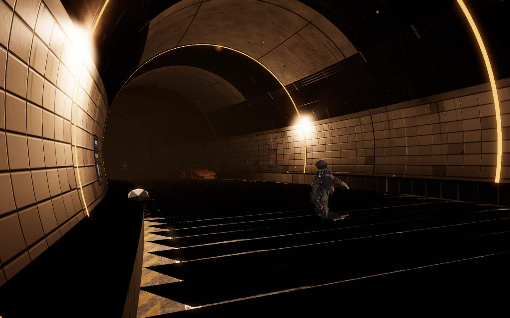

一条不会走完的隧道
灾变之后，一条荒废高速的穿山隧道。少年踩滑板巡线，无限循环——不是视频，是在你桌面上实时渲染的场景：路线由种子随机生成（星形极坐标闭合环，保证有左转也有右转），死灯成段熄灭，海报风化撕裂，弃车堆在检修道，暗处的蝙蝠受惊起飞。
少年是程序化人物：21 骨刚性蒙皮，蹬地、压弯、呼吸、颈巾拖尾每帧求解，始终只占 1 次 draw call。Three.js 实景渲染，全部资产随包，零网络请求。
- 实测帧率
- 56fps @2560×1600
- 人物 draw call
- 1次 / 帧
- 场景三角面
- 143.7k
- 网络请求
- 0条

桌面是它的路面
壁纸不是隔着玻璃看的。Lively 的鼠标默认就打在壁纸上，三条输入通道各自独立：
| 单击桌面 | 蹬地一脚 +1.15 m/s。速度是负反馈的：不点时平稳回落设定速度，不会越蹬越飞。 |
|---|---|
| 双击桌面 | 压弯脉冲——少年把板压进弯道，颈巾拖尾跟着甩。 |
| 横向移动鼠标 | 车道内侧移 + 侧倾，独立通道，不碰速度物理。鼠标静止 4 秒后回落成慢速巡游摆。 |
需要键盘焦点时，在 Lively 设置里关掉「桌面交互」即完全不响应点击。微事件层每 2–7 分钟一出：对向车灯掠过、死灯回路短暂复活、一阵风吹起灰尘与颈巾。
装上它
下载 nightrun-lively.zip（本页顶部按钮，GitHub Release 附件，约 461 KB）。
把 zip 拖进 Lively 库。web 工程不能由命令行导入，拖一次即可；之后调参、截图都可以走 CLI。
更新后按「恢复默认」。存档在 SaveData 里按目录指针保存，改默认值不会覆盖旧存档——不按这一步，新参数不生效。
解压后的文件夹别放 Downloads 等临时位置：Lively 存的是指针，移动或改名会丢 origin 与存档。需要 WebGL2；不可用时回落 2D 近似，不会是一块黑矩形。无音频。帧率为 RTX 4060 Laptop 实测，核显请在设置里降画质档。
工程与设定
这个仓库同时是工程档案：世界观、蓝图与人物方案都在里面，工作台可以实时调参并导出你自己的 zip。